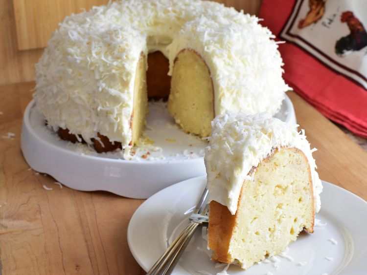

This is a copycat Tom Cruise cake, aka the white chocolate coconut Bundt cake that Tom Cruise sends every Christmas to a select list of friends—it is definitely worth jumping on a couch for in my opinion
ingredients
Cake:
- 3 cups cake flour
- 1 ½ teaspoons baking powder
- ¾ teaspoon salt
- ⅛ teaspoon ground nutmeg
- ½ cup unsalted butter, softened
- 1 ½ cups white sugar
- 2 large eggs, at room temperature
- 2 large egg whites
- 1 tablespoon vanilla extract
- ½ teaspoon almond extract
- 1 (13.5 ounce) can full fat unsweetened coconut milk, thoroughly shaken
- 1 ¼ cups sour cream, at room temperature
- 1 cup sweetened shredded coconut
- 1 cup finely chopped white chocolate
Frosting:
- 2 cups sweetened shredded coconut
- ¼ cup unsalted butter, softened
- 1 (8 ounce) package cream cheese, at room temperature
- 1 teaspoon vanilla extract
- 1 pinch salt
- 2 ½ cups powdered sugar
- 2 tablespoons heavy cream
Directions
- Preheat the oven to 350 degrees F (175 degrees C). Grease and flour a 12-cup Bundt pan.
- Sift together flour, baking powder, salt, and nutmeg.
- Cream together butter and sugar in a large bowl with an electric mixer until light and fluffy. Beat in whole eggs, 1 at a time, beating well after each addition. Add in egg whites, and beat on medium-high speed for 3 minutes. Mix in vanilla and almond extracts. Mix in coconut milk and beat until thoroughly incorporated. Add in half of the flour mixture and mix until just combined. Add in sour cream and mix until just combined. Add in remaining flour mixture and mix until just combined. Fold in shredded coconut and white chocolate.
- Pour batter into the prepared pan, and tap pan gently on the counter a few times to remove air bubbles.
- Bake in the preheated oven until a toothpick inserted into the center of the cake comes out with a few moist crumbs, 60 to 70 minutes. Allow cake to cool in the pan for 20 minutes before removing to a wire rack to cool completely.
- Pour 2 cups coconut flakes into a large, dry skillet and heat over medium-low heat until coconut flakes are just barely blonde in color, 3 to 4 minutes, stirring constantly. Remove from pan and cool completely.
- Cream 1/4 cup butter in a large bowl with an electric mixer until smooth. Add cream cheese and beat until thoroughly combined. Mix in vanilla extract and salt. Add in powdered sugar, 1 cup at a time, mixing well after each addition. Pour in heavy cream and beat on medium-high speed for 2 minutes.
- Place dollops of frosting on top of the cooled cake, and smooth over the top and sides of the cake. Sprinkle cooled toasted coconut all over the top and sides of the cake. For best results, cool cake in fridge for 30 minutes before serving.
principal page
page top